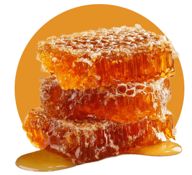
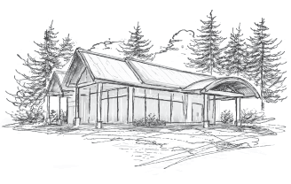
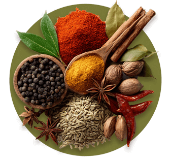
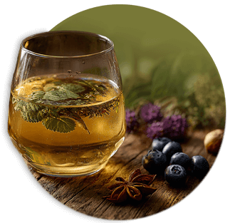

Honey, time and care in every glass
Our meads are shaped first by blossom and harvest and then by patience. Each expression begins with estate honey, guided fermentation and careful maturation.
Our Approach
Mead treated with the same respect as fine wine
At Foragers, our mead is treated with the same respect as fine wine and the same clarity as thoughtful, elevated cuisine.
We ferment small batches to preserve nuance and expression. Estate honey provides structure and aromatic complexity. When fruit is introduced — whether an orchard apple, wild berry, stone fruit or currant — it is chosen for balance, not sweetness.
Fermentation is temperature-controlled to protect delicate floral notes. Some meads mature in stainless steel to retain brightness and clarity. Others rest in oak barrels in our lower cellar, developing depth, texture and subtle tannin.
Intervention is minimal. Precision is intentional.

Current Expressions | 2026
Four classic styles, each shaped by a unique expression of the Sunshine Coast
Elemental
Light, floral, effortless Mead · White · 13.5% abvBright and wonderfully drinkable, with a refined, light honey character supported by delicate floral notes, subtle citrus edges and a crisp apple acidity that shines with clarity. The result is airy, effortless and refreshingly modern.
Winsome
Blossom meets bramble Mead · Rosé · 12% abvCrafted on our farm from estate honey and whole blackcurrants, this rosé mead balances bright acidity with wild berry depth. Fresh, dry and finely textured, it captures the meeting of blossom and bramble, an expression of orchard, apiary and season.
Foundation
Where honey meets the vine Mead · Red · 14% abvRooted in craft, shaped by soil, patience and time, our estate honey meets carefully selected wine grapes in this contemplative red mead. Notes of plum, dried cherry and warm spice unfold over a long, grounded finish creating depth without heaviness.
Bloom
Honey in full flower Mead · Dessert · 10% abvMade from late-harvest honey and slowly fermented to preserve its richness, this dessert mead is layered yet refined. Notes of caramelized pear and orange blossom rise from a velvet palate, balanced by gentle acidity and a warm, graceful finish.

Vintage & Seasonality
Each release tied to a season and a moment in time
We do not chase consistency at the expense of expression.
Honey composition shifts with every bloom. Apple acidity varies with weather. Even subtle changes in temperature can influence fermentation character.
Rather than mask these differences, we allow them to inform the final result. Each release is tied to a season, a moment captured from first fermentation through to the final glass.

Pairing & Presence
Crafted to complement the kitchen
Our meads are designed to sit naturally at the table, pairing effortlessly with the flavours of the season.
In the dining lounge and depending on the season or the inspiration of our chef, you may find our meads incorporated directly into reductions, vinaigrettes and desserts, creating continuity from glass to plate.
A Note on Sweetness
Clarity, lift and restraint
Mead carries a long history of being misunderstood as uniformly sweet.
At Foragers, sweetness is measured and deliberate. Residual sugar is balanced with acidity, tannin and structure. Many of our expressions finish dry or off-dry, allowing honey's complexity to emerge without heaviness and inform the final flavour, rather than dictate.
The result is clarity, lift and restraint.

Come experience it for yourself
Join us above the orchard for seasonal mead, elevated dishes and an experience shaped entirely by this place.